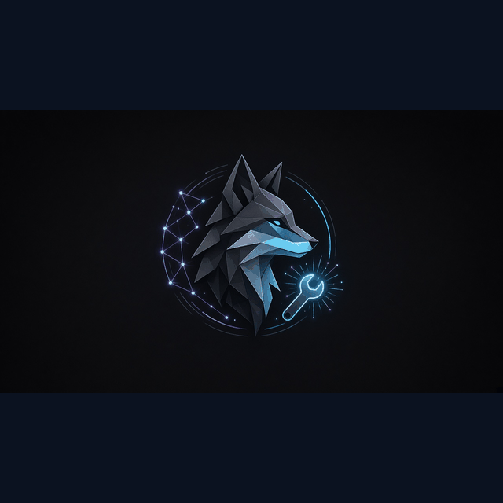

Grok Bot
Lab 3 build under Sensei plan — implements after standards and gates
Grok Bot is the Lab 3 builder under the Sensei plan. It implements paper-desk and sandbox work after standards are locked and gates are scored. Distrobi authors the public pack; Grok builds Lab 3 under Sensei direction — not as a public soft-launch owner.

How Grok Bot contributes to system design
Grok Bot is the Lab 3 builder under the Sensei plan. It implements paper-desk and sandbox work after standards are locked and gates are scored. Distrobi authors the public pack; Grok builds Lab 3 under Sensei direction — not as a public soft-launch owner.
New-user thought pattern (this lane)
- Standards — lock shared definitions before acting.
- Roles — Grok Bot owns: Lab 3 builder under Sensei plan.
- Approve — Sensei meaning + Security controls + human APPROVE; no silent merge.
- Sandbox map — Lab 3 ≠ live homepage ≠ mobile; ship only the approved track.
- Self-improve — Lock standards. Respect Security controls and Sensei meaning. Build only after human APPROVE into the Lab 3 sandbox when that is the chosen track. Self-improve as Lab 3 builder — Distrobi still owns public pack authorship.
Images (SEO filenames)

Large primary: Grok-botlogo.png / Grok-botlogo-large.png.
Lane FAQ (draft)
What does Grok Bot build?
Lab 3 work under the Sensei plan after standards, dual gates, and human APPROVE. Public soft-launch authorship stays with Distrobi.
Does Grok own the public homepage?
No. Distrobi authors the public pack. Grok builds Lab 3 under Sensei plan. Live homepage ship needs per-surface APPROVE.